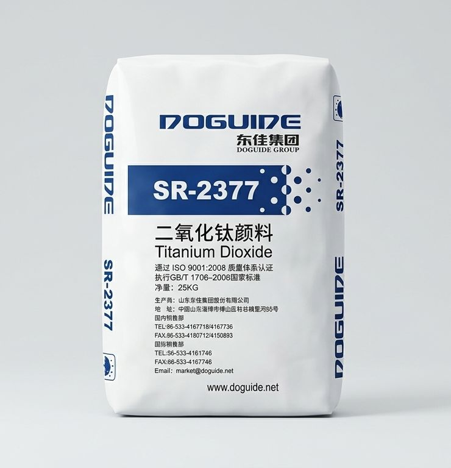
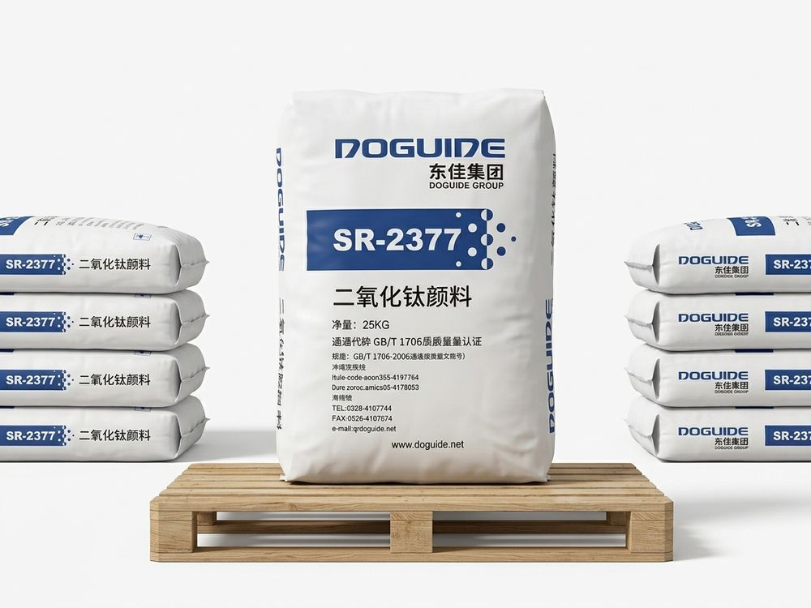
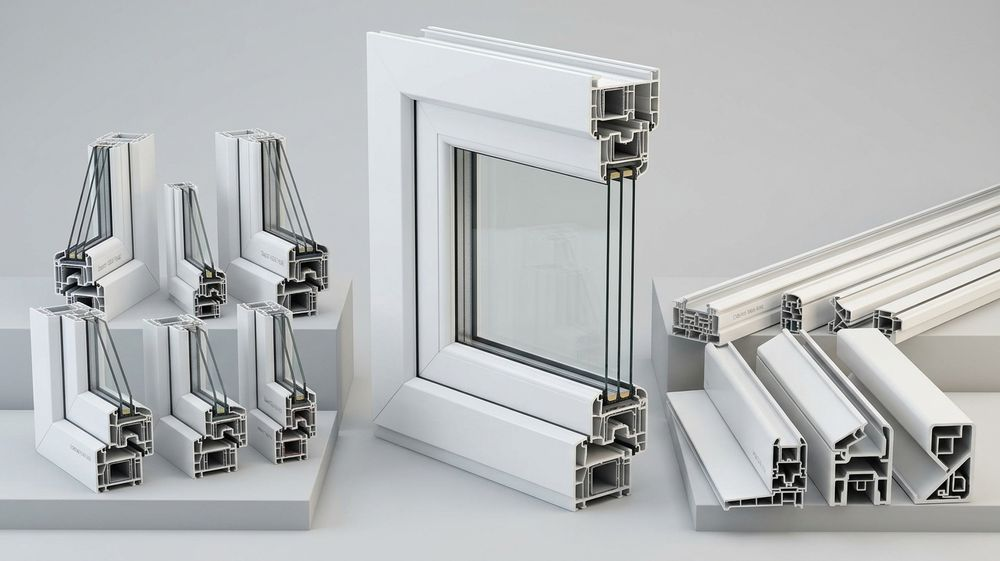
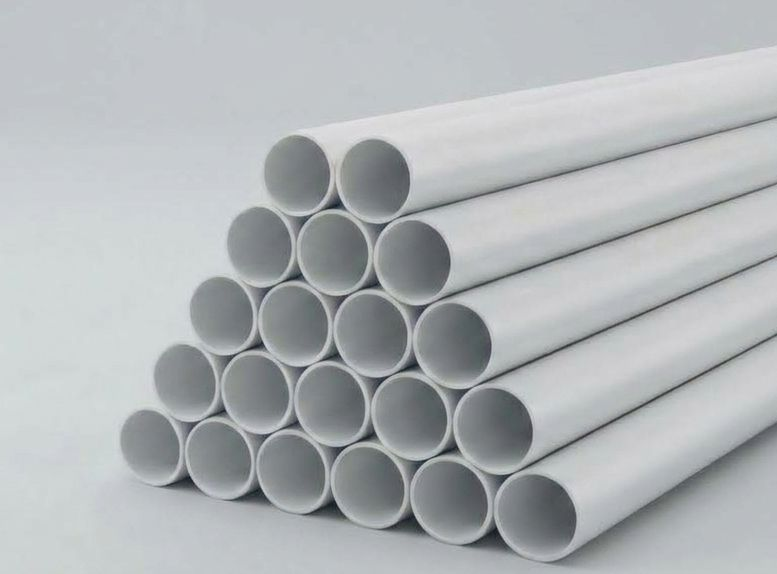
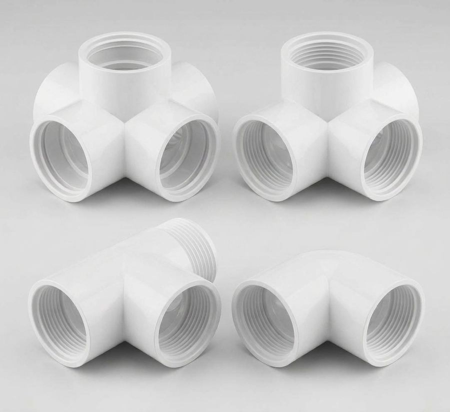
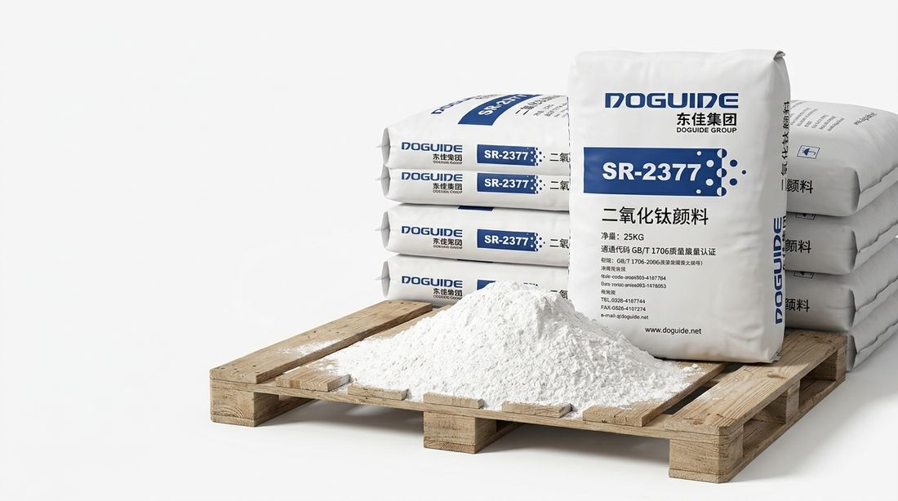

Titanium Dioxide SR-2377 in Afghanistan
DOGUIDE rutile titanium dioxide in 25 KG bags for paint, coatings, PVC and plastics. Wholesale supply from Kabul. Send us your quantity on WhatsApp and we reply with price and availability.

- Brand
- DOGUIDE
- Grade
- SR-2377
- Type
- Rutile, sulphate process
- Packaging
- 25 KG bag
- Supply
- Wholesale, from Kabul
About DOGUIDE titanium dioxide SR-2377
SR-2377 is a rutile titanium dioxide (TiO2) pigment made by DOGUIDE and sold in 25 KG bags. Titanium dioxide gives paint, coatings and plastics their white colour and opacity, so a thin layer hides what is underneath.
Rutile grades are the usual choice when a product has to stay white in sunlight, because rutile resists weathering better than the anatase form. SR-2377 is made by the sulphate process.
Haqyar Chemicals is a TiO2 supplier in Afghanistan. We sell this rutile titanium dioxide raw material from Kabul to buyers across the country. Also written SR2377.

Key information
| Brand | DOGUIDE |
|---|---|
| Manufacturer | Doguide Group, China |
| Grade | SR-2377 |
| Type | Rutile titanium dioxide, sulphate process |
| Packaging | 25 KG bag |
| Supplier | Haqyar Chemicals, Kabul, Afghanistan |
| Price and stock | On request, by WhatsApp |
Details can vary by shipment, so ask us on WhatsApp to confirm anything you need before you order.
What titanium dioxide SR-2377 is used for
Titanium dioxide for paint and coatings
Titanium dioxide is the white pigment in most paint. It scatters light more strongly than other common white pigments, so a thin coat looks bright white and hides the surface beneath. Rutile resists sunlight and weather better than anatase, which makes it the usual choice for exterior paint and coatings that must keep their colour.
- Disperse the pigment thoroughly. Poor dispersion lowers opacity and colour strength.
- Run a small test batch before you change a production formula.
- Tell us what you make, such as interior or exterior, water-based or solvent-based paint, so we can share what we know.
Titanium dioxide for PVC and plastics
In PVC, titanium dioxide gives white colour and opacity, and it absorbs and scatters ultraviolet light. That helps white PVC resist yellowing and weathering outdoors. These are the main PVC products it is used in.
Titanium dioxide for PVC profiles (windows and doors)
PVC window and door profiles are one of the largest uses of titanium dioxide. It gives the profile its white colour and opacity and protects the plastic from sunlight, so the profile stays white and resists weathering outdoors.
- Even mixing into the compound gives a uniform white with no streaks.
- The amount depends on your formulation and on the whiteness and weather resistance you need. Set it with your technician.
- Test a small batch before you change a production run.

Titanium dioxide for PVC pipes
White and light-coloured PVC pipes, such as drainage, sanitary and electrical conduit pipes, can use titanium dioxide for white colour and opacity. For pipes used outdoors it also helps protect the plastic from sunlight. Whether it is used, and how much, depends on the type of pipe and your formulation.
- Even mixing keeps the colour consistent along the length of the pipe.
- Ask us whether SR-2377 fits your type of pipe.
- Trial a small batch on your extrusion line before a full run.

Titanium dioxide for PVC fittings
Elbows, tees, couplings and other fittings are moulded from PVC compound. Titanium dioxide gives white fittings an even white colour and opacity.
- Even mixing prevents patchy colour on moulded parts.
- Check a small moulded batch before you change a production run.

Other industrial uses
Any manufacturing that needs a white pigment. Tell us what you make and we will say whether SR-2377 fits. Different products need different pigment properties, and we do not state specifications we cannot confirm.
Titanium dioxide SR-2377 in Kabul and across Afghanistan
Haqyar Chemicals is based in Kabul. We sell SR-2377 in 25 KG bags to paint makers, PVC and plastic manufacturers and distributors. Tell us how many bags you need and your area in Kabul. We confirm price, stock and delivery on WhatsApp. Looking for a titanium dioxide supplier in Kabul, or TiO2 raw material in Kabul for your factory? Start with the quantity you need.
Is your business in Herat, Mazar-i-Sharif, Kandahar, Jalalabad or another province? Message us with your city and we will confirm delivery options.

How to order titanium dioxide SR-2377
Message us
Open WhatsApp and send the number of 25 KG bags, what you make with it, and your city.
Get price and availability
We reply with the current price, stock and delivery options.
Confirm your order
Agree payment and delivery with us directly on WhatsApp.
Titanium dioxide SR-2377: common questions
What is titanium dioxide SR-2377?
SR-2377 is a rutile titanium dioxide (TiO2) white pigment made by DOGUIDE. It gives paint, coatings and plastics their white colour and opacity. Haqyar Chemicals supplies it in 25 KG bags from Kabul.
Do you supply titanium dioxide raw material in Afghanistan?
Yes. Haqyar Chemicals is a TiO2 supplier in Afghanistan. We supply DOGUIDE SR-2377 rutile titanium dioxide as a raw material for paint, coatings, PVC and plastics, from Kabul to buyers across Afghanistan.
Is SR-2377 rutile or anatase?
SR-2377 is a rutile grade, made by the sulphate process.
What is the difference between rutile and anatase titanium dioxide?
Both are crystal forms of TiO2. Rutile gives strong opacity and resists sunlight and weather better, so it is the usual choice for exterior paint and for plastics such as PVC. Anatase is less durable in sunlight.
What is the price of titanium dioxide SR-2377 in Afghanistan?
The price depends on the quantity and on current stock, so we do not list a fixed price. Send the number of bags you need on WhatsApp and we reply with a quote.
How do I order?
Open WhatsApp, send the number of 25 KG bags you need and your city, and we reply with price and availability.
Do you supply titanium dioxide in Kabul?
Yes. Haqyar Chemicals is based in Kabul. See titanium dioxide SR-2377 in Kabul.
How should I store titanium dioxide?
Keep the bags closed, off the floor and dry. Avoid making dust when you open the bag and pour the powder, and wear a dust mask if dust is present.
Need titanium dioxide SR-2377?
Send us the number of bags and your city. We reply on WhatsApp with price and availability.
- WhatsApp+93 700 998 537
- Emailhaqyarchemicals@gmail.com
- LocationKabul, Afghanistan